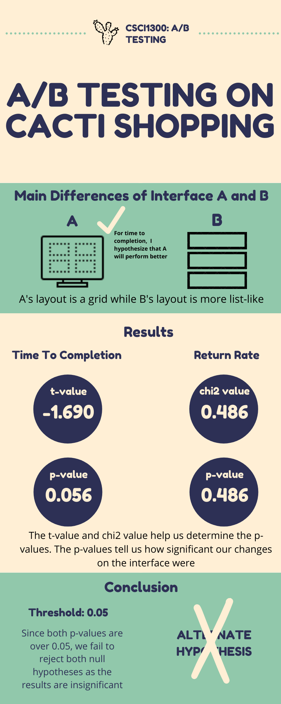

A/B Testing 🌵
For this project, I changed a template for shopping for succulets and kept the other the same.
I tested whether the changes I made had a significant change on the time of completion (adding over $150 into the cart)
and return rate (if the user returned to the shopping page after going to the checkout page).
Example of Interface A

Example of Interface B

I minimized the screen so that I could take a screenshot
of the fullscreen in one image.
The main change with the interfaces is the layout. For interface A, I chose
to change the layout to a grid so utilize the screen space more and to decrease the
amount of scrolling the user would have to do.
Time to Completion
Null Hypothesis
The changes made to interface A and B will not affect the time to complete the task
of adding over $150 to the cart.
Alternate Hypothesis
The changes made to interface A and B will cause
interface A to have a quicker time to completion for the given task than
interface B.
Explanation
Since interface A is more compact and all four items fit on one screen
without scrolling, the user is able to click the "Add to Cart" buttons quicker.
Additonally, being able to see all products and prices at once will will
expedite the process.
Return Rate
Null Hypothesis
The changes made to interface A and B will not affect the
rate at which users return to the shopping page after viewing their cart (return rate).
Alternate Hypothesis
The changes made to interface A and B will cause
interface B to have a higher return rate than interface A.
Explanation
Since interface B requires more scrolling than interface A, it may be harder
for users to correctly gauge if over $150 was added to the cart. Since the only
way to check if over $150 was added is to go to the checkout page, the user of interface B will
return to the shopping page more often as interface A is more efficient in the layout.
Data Collection Process
I first collected logs through studio and friends and family
since I did not have sufficient data after the data collection from studio. I
then filtered just the important information from the logs, such as
the time stamp, unique users, which interface they interacted with, and
their activity. I then calculated the time to completion for each session log
and how many of the users returned to the page after checking out. This information
is critical for calculating the t-score, chi2 value, and p-values. Then,
I wrote a python script to determine the t-score, chi2 value, and p-values.
Infographic
I made an infographic in order to portray the results of this A/B Testing
Experiment in a more digestible way.

Takeways of A/B Testing
- I think the data collection limited the quality of the results. If I could
do this experiment again, I would collect more data from unique users.
- Since my results were insignificant so I was unable to
reject the null hypothesis, the time to completion p-value was nearly below 0.05.
This means that while it was still an insignificant result, it was close to rejecting
the null hypothesis and proving that interface A had a faster time to completion.
- In this experiment, it was difficult to tell whether the layout of
the website was the only factor in how the user's responded to the website.
- In general, A/B testing is a powerful tool to see how little changes can affect
your product by a large amount. I think performing another A/B test would be interesting
to do on a small factor on an interface such as the color of a button. It would be
a really interesting and cool project to be a part of and to see if button or title colors
affect the success of a huge product!